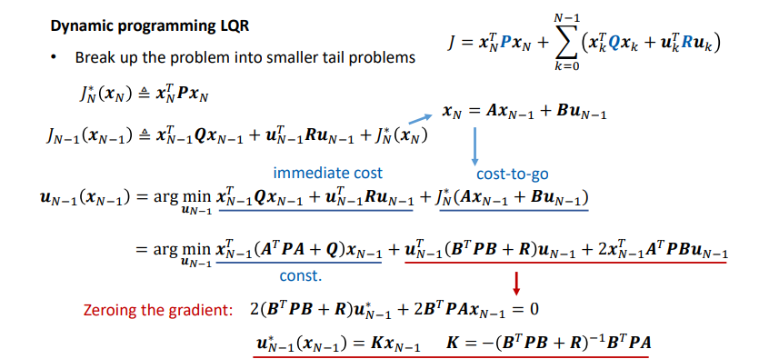
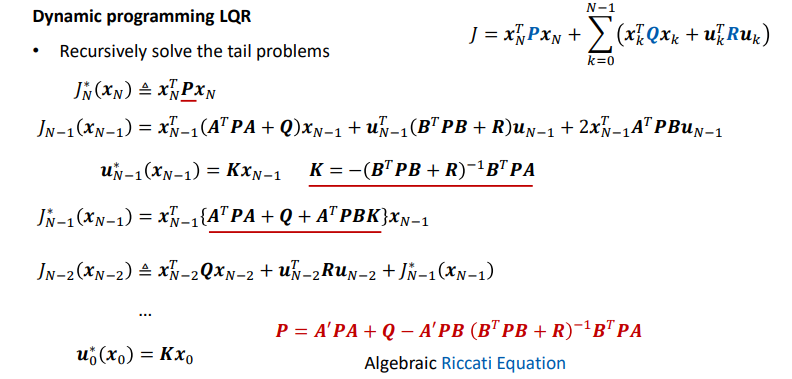
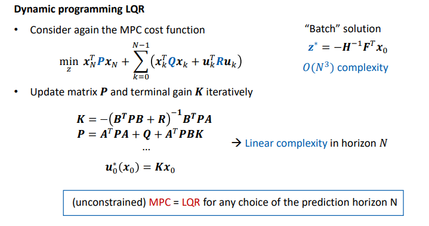
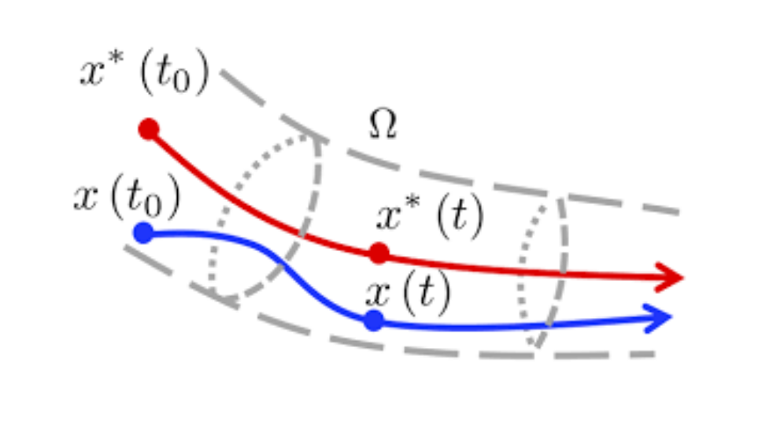
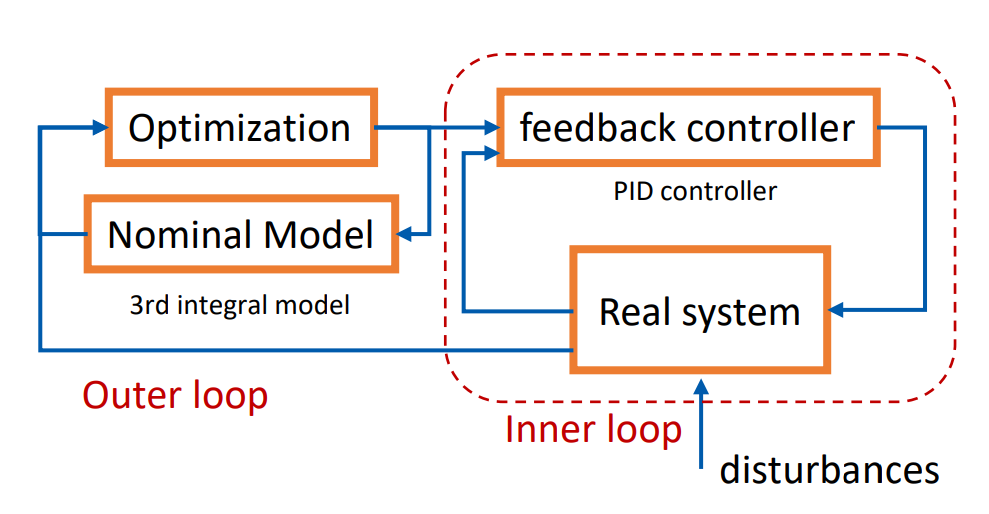

Model Prediction Control (MPC)¶
As for the control problem, the simplest is Reactive Control.
Reactive Control¶
The advantages of reactive control are:
- Easy to design
- Consider errors
But there are also limitations:
- Non-trivial for more
complex systems - Control gains must be
tuned manually - No handling of
coupled dynamicsandconstraints - Ignores
future dicision
Optimal Control¶
Optimal Control solves the problem that how to best control the system.
In order to answer the question how the input influences the future state, we should build the system model firstly.
Model of the system can be continuous:
or discrete:
where:
- \(\mathbf{x}_0\) is the initial condition
- \(\mathbf{x}_k\) is state
- \(\mathbf{u}_k\) is input
After the system model, another neccesary thing we define is the Objective Function, which describes the expectation of future trajectory.
where:
- \(q(x_k, u_k)\) describes the
stage cost - \(p(x_N)\) describes the
terminal cost
we can define the \(q(x_k, u_k) = ||e_k||^2 + \rho \Delta u_k^2\) , where \(e_k = x_k - x_k^{ref}\) is the tracking error, \(\rho \Delta u_k^2\) is the smoothing cost.
Except for the objective function, constraints should also be considered:
where \(h(x_k, u_k)\) is the euqality constraints, \(g(x_k, u_k)\) is the inequality constrains.
So in general, the procedure of the optimal control is:
- Build
Objective Function:
- Add
Constraints:
- Solve
Optimal vector:
The optimal vector is ideal, of course. In reality, the difficulties of (Open Loop) optimal control are:
- The
dynamic modelis usuallyinaccurate, model errors accumulate over time. - The optimizer \(z^\star\) we get can not be accurately applied.
- Long task-horizons make the problem
intractable. - The system may be affected by
external disturbances.
Model Predictive Control (MPC)¶
MPC combines Reactive Control and Optimal Control, it uses a dynamic model of the process to predict its future evolution(finite time horizon) and choose the best control action.
1 2 3 4 5 6 7 8 9 10 11 12 13 | |
The process is:
Feedbackof the measurement information, which starts from the estimatedcurrent stateOptimizethe best control sequence, which finds controls forlimited previewinto the futureReceding horizonframework, which applies only the first input, thenreplan
The advantages of MPC are:
- Considers future (although a limited future)
- Accounts for errors
- Reduces problem size (solver is usually warm-started with the previous solution)
Design of MPC¶
Prediction model, trade-off in choice of model family:- Simplicity model, lower computation
- Accuracy model, higher computation
Cost function, vary in different requirementsPrediction horizon, trade-off of- computation overload
- recursive feasibility
Terminal constraints
Linear MPC¶
Linear MPC has following linear prediction model:
And each state at time \(k\) has the relation with inputs:
Rewrite the equation above as matrix:
The cost function of linear MPC is quadratic:
where \(P\), \(Q\) and \(R\) are positive semi-definite.
The goal is to find the best control sequence \(u_{0:N-1}^\star\) that minimizes:
We define:
- \(\bar{S} = \begin{bmatrix} B & 0 & \cdots & 0 \\ AB & B & \cdots & 0 \\ \vdots & \vdots & \ddots & \vdots \\ A^{N - 1}B & A^{N - 2}B & \cdots & B \end{bmatrix}\)
- \(z = \begin{bmatrix} u_0 \\ u_1 \\ \vdots \\ u_{N - 1} \end{bmatrix}\)
- \(\bar{T} = \begin{bmatrix} A \\ A^2 \\ \vdots \\ A^N \end{bmatrix}\)
- \(\bar{Q} = \begin{bmatrix} Q & 0 & 0 & \cdots & 0 \\ 0 & Q & 0 & \cdots & 0 \\ \vdots & \vdots & \ddots & \vdots & \vdots \\ 0 & \cdots & 0 & Q & 0 \\ 0 & 0 & \cdots & 0 & P \end{bmatrix}\)
- \(\bar{R} = \begin{bmatrix} R & 0 & \cdots & 0 \\ 0 & R & \cdots & 0 \\ \vdots & \vdots & \ddots & \vdots \\ 0 & \cdots & 0 & R \\ \end{bmatrix}\)
Then:
Then define:
- \(H = 2 (\bar{R} + \bar{S}^T \bar{Q} \bar{S})\)
- \(F = 2 \bar{T}^T\bar{Q}\bar{S}\)
- \(Y = 2 (Q + \bar{T}^T \bar{Q} \bar{T})\)
So we got the Condensed form of MPC:
where, \(z = \begin{bmatrix} u_0 \\ u_1 \\ \vdots u_{N - 1} \end{bmatrix}\)
The optimum is obtained by zeroing the gradient:
So we got the optimal batch solution \(z\):
Unconstrained linear MPC is a linear state-feedback
Linear Quadratic Regulator(LQR)¶
Linear Quadratic Regulator(LQR) uses dynamic programming to solve the problem. It exploiting the sequential structure of the problem.
According to Bellman's principle of optimality:
An optimal policy has the property that, regardless of the decisions taken to enter a particular state, the remaining decisions made for leaving that stage must constitute an optimal policy.
We can solve the problem from back to front.



Other MPC¶
Explicit MPC¶
Explicit MPC implement constrained linear MPC without an online QP solver
For an online optimization, with given \(x(t)\), we solve the problem at each time step \(t\), which is a Quadratic Programming(QP).
For an offline optimization, we solve the QP in advance for all \(x(t)\) in a given range to find the control law \(u = u_0^\star (x)\) explicity, which is a Multi-parametric Quadratic Programming(mpQP)
Linear Time-Varying MPC and Nonlinear MPC¶
Time-Varying means in linear model:
the matrix \(A\) and \(B\) are varying by time.
A nonlinear MPC has nonlinear model:
A Linear Time-Varying model can be obtained by linearing a nonlinear model.
Convert linear model to discrete-time using forward Euler method:
Then we can solve a linear MPC online.
Augmented model is often used in practice, which use the state matrix and control matrix as state, difference of control as new input vector. It's good to add cost on difference of input.
Tube MPC¶
The advantages of nonlinear MPC:
- Sometimes it's hard to carry out
system identification, especially for nonlinear systems; - Recursive feasibility and stability cannot be guaranteed for complex systems.
Here comes the Tube MPC, which use an independent noninal model of the system, and use a feedback controller to ensure the actual state converges to the nomial state.
An ancillary feedback controller is designed to keep the actual state within an invariant tube around a nomial trajectory computed neglecting disturbances.

